Common dolphin
Supplied-model body, skin and movement revision. The new exterior has a level resting profile, a fuller torso, a refined beak and flippers, smaller seated eyes, and smooth wet-skin materials. Jumping now includes approach, exit, flight, head-first re-entry and recovery.
This is a reference-led reconstruction. Individual dimensions, pigmentation, skin response and movement are uncalibrated. It is not a scan or independently certified biological reconstruction.
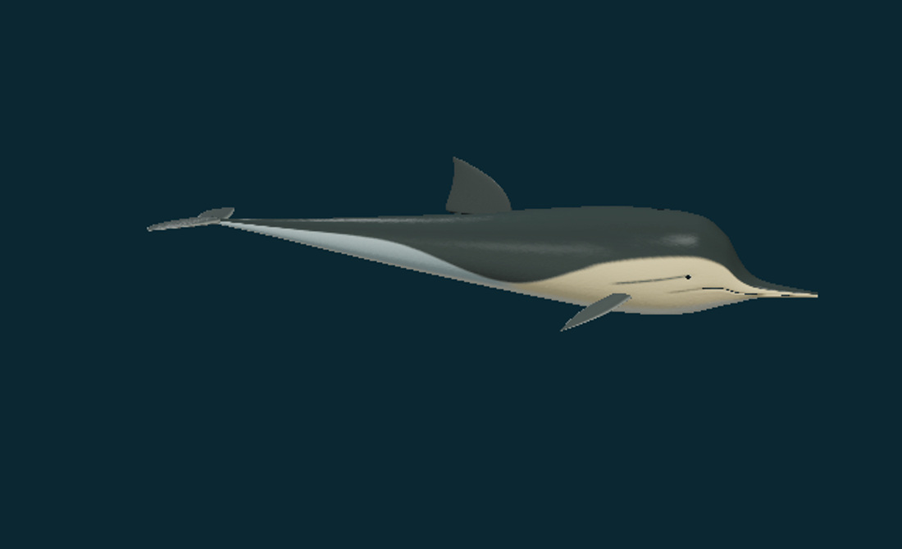

Both are actual model renders with the same viewing direction and separately fitted normalized framing. Their release-specific materials and lighting differ; this is not a metric scale comparison. The new view is not a generated photograph.
What changed
The supplied triangular body receives one smooth Loop refinement. Its resting axis is levelled, the torso gains modest fullness, the beak is slightly lengthened and slimmed, and pectoral tips are swept and reduced. The two original eye components are reduced and seated at the refined skin.
A charcoal cape dips into a V below the dorsal fin. Warm anterior and grey posterior flank panels meet above a pale belly. Small eye, jaw/flipper and closed dorsal blowhole marks complete the selected exterior. Exact regional and individual patterns vary.
Original subtle skin detail is projected into the source UV parameterization. Separate colour, fine normal and roughness maps drive dielectric wet-skin lighting. The private photographs and source painted illumination are not copied into these maps.
The same model carries six finite studies. Posterior bending leaves the forebody and lateral fluke span stable. The leap uses continuous phase-boundary position/velocity and a parabolic flight interval; its display clock and body pitch are authored.
Research and scientific scope
The existing broad Delphinus delphis accession is retained. The 12 private reference photographs guide visible proportions, pigment and leap postures; they do not provide camera calibration, an identified individual or a subspecies determination.
| Source inspected | What it supports | How it is applied |
|---|---|---|
| NOAA Fisheries · short-beaked common dolphin Appearance and behavior account. | A sleek beaked body, distinct dorsal fin and tan/grey flank hourglass provide comparative external features. Colour varies with individuals, age and region. | Shape and pigment comparison. The account does not resolve the regional form or subspecies of the private photographs. |
| Society for Marine Mammalogy · April 2026 list Current list date and Delphinus taxonomic notes. | The committee retains a broad common-dolphin concept with provisional regional subspecies and discloses disagreement over eastern Pacific bairdii. | Retain this existing accession and all taxonomy fields; make no new subspecies determination from photographs. |
| Long, Pabst, Shepherd and McLellan 1997 Author-hosted full PDF; selected Summary, Methods, Table 1 and complete printed p67 Figures 1–2. | Segment tests from five preserved Delphinus columns demonstrate regional dorsoventral mechanical differences. | Regional bending context. No fitted live waveform, numerical tissue stiffness or natural stroke frequency is transferred to the model. |
| Weihs 2002 · porpoising dynamics Publisher abstract and notation; full paper and figures not accessed. | A theoretical treatment combines leap, coast and active-swimming phases. | Qualitative phase sequence. Energetic motives and parameters are not treated as universal explanations or measurements of this dolphin. |
| Au, Scott and Perryman 1988 · leap-swim observations Official NOAA-hosted four-page PDF text and complete first two pages, including Figure 1. Figure 2 is poorly reproduced in the scan. | Related Stenella observations distinguish leap and underwater segments and separate exit/re-entry splash remnants. | Comparative phase and water-cue context. The reported speeds, distances and uncertain crossover estimates are not assigned to Delphinus or the supplied model. |
| Dans et al. 2022 · common-dolphin group movements Retained earlier source review; group-follow scope retained. | Boat-based group tracks concern spatial movement, rather than individual joint or banking kinematics. | Group-movement context only. The local bank/yaw settings remain authored. |
Six movement studies
Each study occupies 12 illustrative playback seconds and holds its endpoint. The jump ends in submerged recovery. Observe returns to the resting exterior. The transparent water surface, rings and droplets provide visual orientation; they are not a fluid simulation.
| Study | Visible sequence | Implementation scope |
|---|---|---|
| Dorsoventral swimming | The same skin and geometry bend chiefly in the posterior body; flukes move vertically while lateral span and the forebody stay stable. The 0.8 Hz display cycle, amplitude and envelope are selected, without a measured common-dolphin rate or computed thrust. | Regional exterior bending; no individual trajectory or fluid solution. |
| Stroke to glide | Finite caudal strokes settle by 5.5 illustrative seconds and hold. Burst/coast theory supplies phase context; display duration, buoyancy and speed are not fitted. | Authored transition to a quiet exterior posture. |
| Turning posture | A modest whole-body yaw preserves head, eye and appendage attachments and returns to neutral. It is an orientation study, without a solved steering path or forces. | Qualitative posture with selected angle and timing. |
| Banked posture | A restrained longitudinal bank and yaw accompany local posterior strokes. Group-track observations do not measure these selected bank angles or joint motions. | Authored bank and local posterior flexion, not a full maneuver fit. |
| Surfacing study | The body rises toward a visible reference water surface, changes pitch, and submerges into a held recovery. The closed external blowhole region crosses the surface. No lung ventilation, spout or respiration rate is calculated. | Exterior surface crossing; no respiration or buoyancy model. |
| Jump and re-entry | A finite submerged approach and powered exit lead to a parabolic centre path, changing pitch, descent, head-first re-entry and recovery hold. The same body and materials are retained; no underwater thrust is claimed in air. The selected trajectory and illustrative ripples/spray are not fitted from the still photos. | Authored trajectory with ballistic flight interval; no fluid/contact/energetic or individual kinematic validation. |
Reviewed actual model views
Seventeen final states cover the body axes, face, every study and the leap sequence. Images use the active geometry and material maps in the shared compatibility renderer. WebGL appearance depends on device support and is not established by these captures.

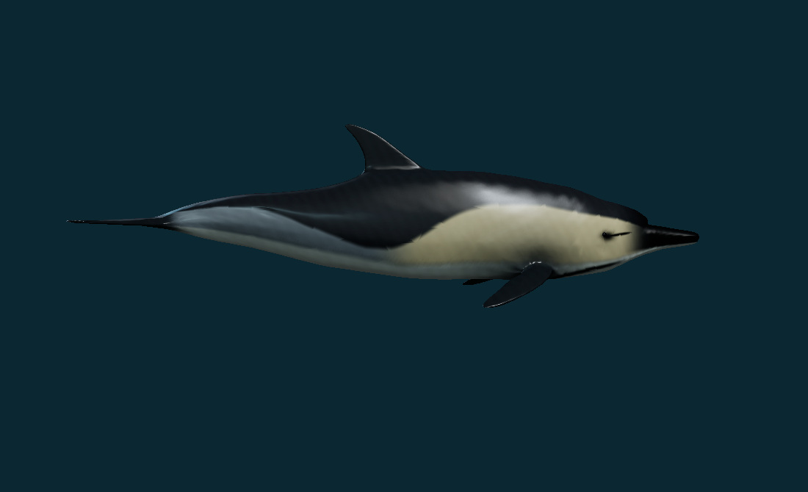

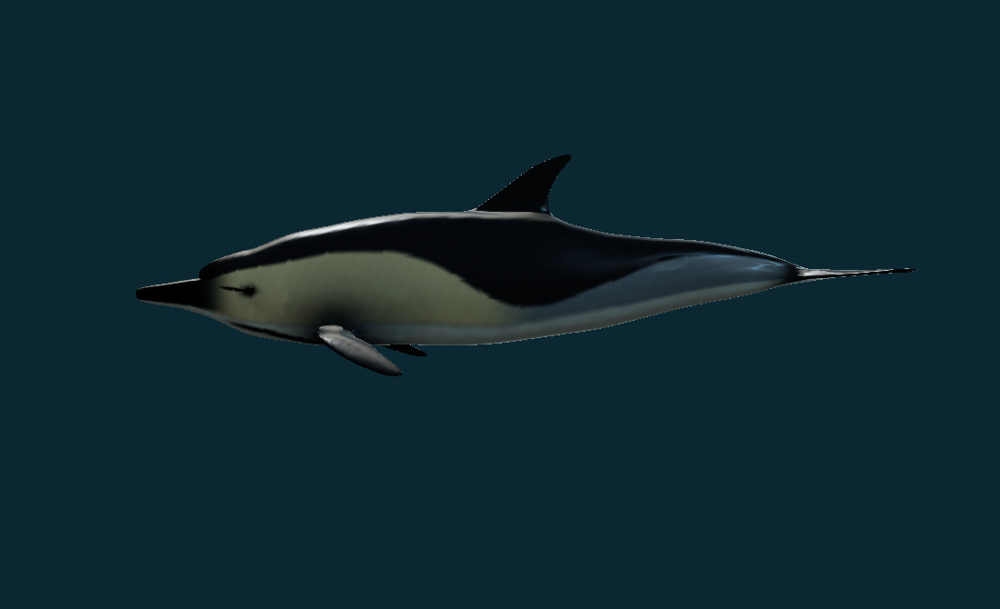

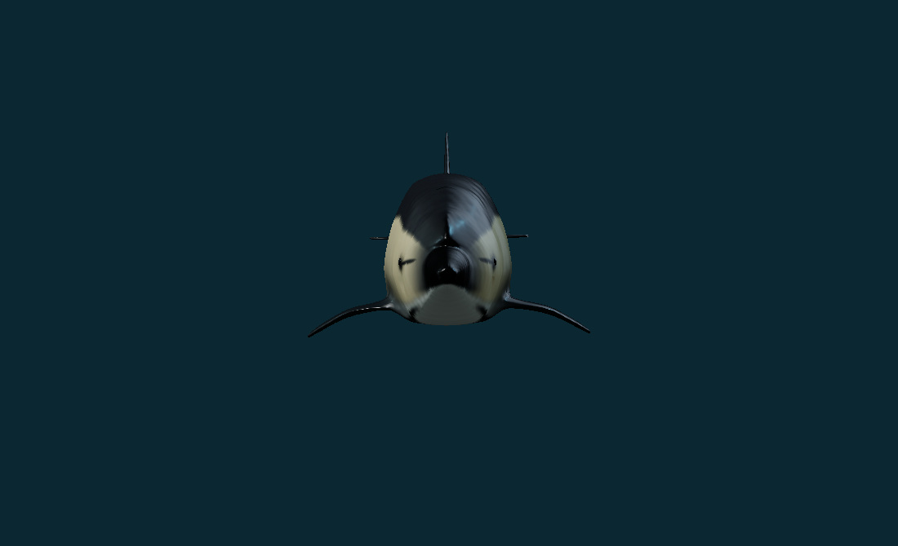

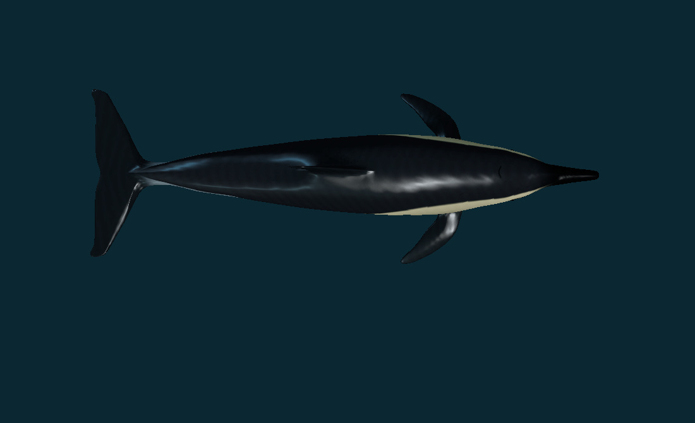

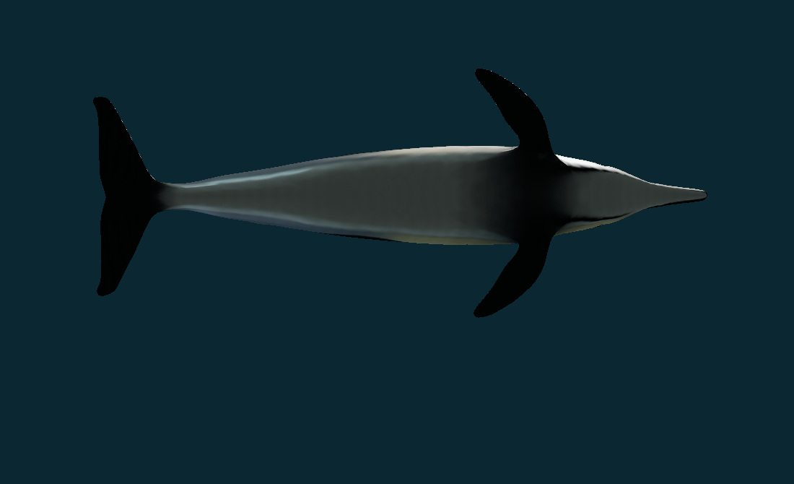

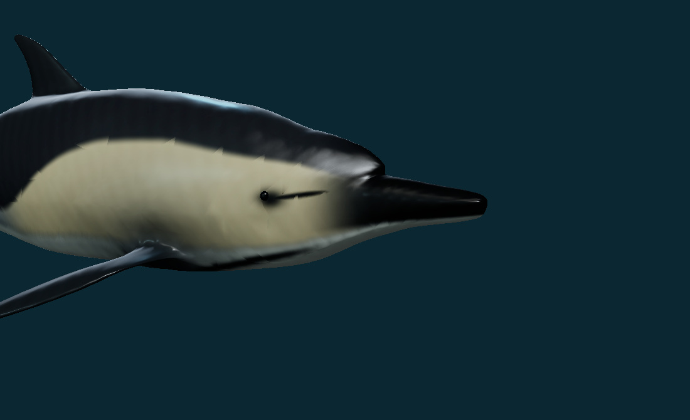

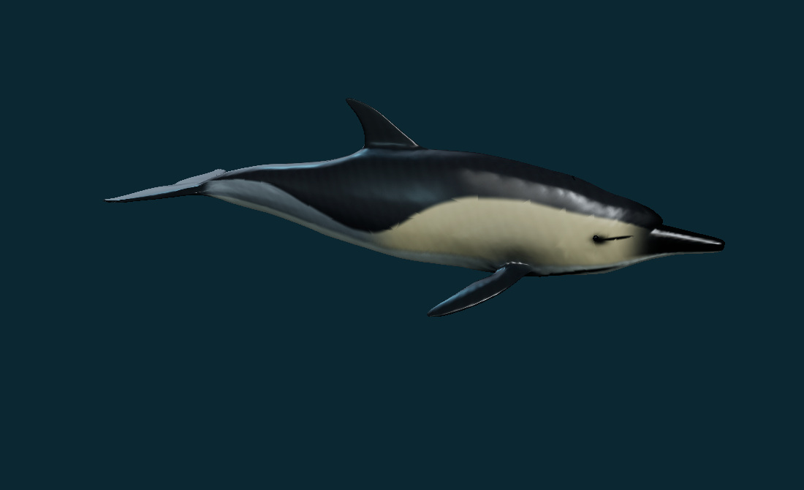


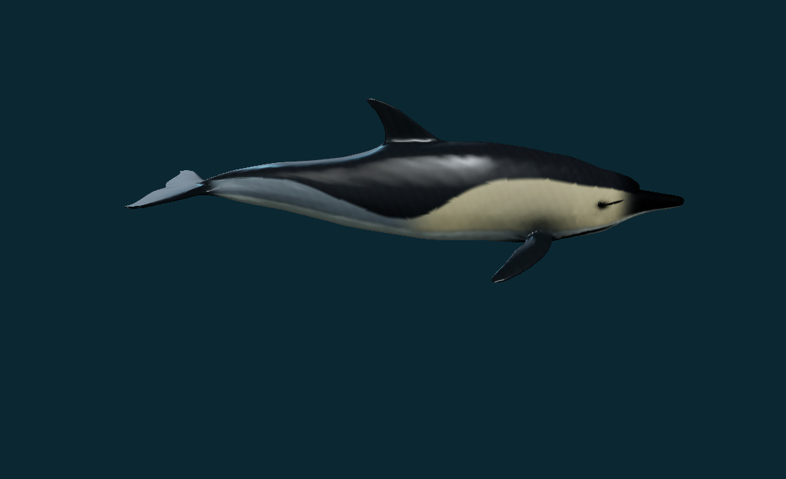

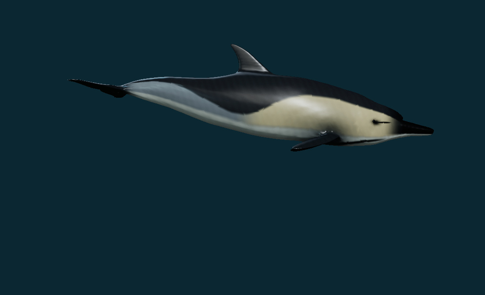

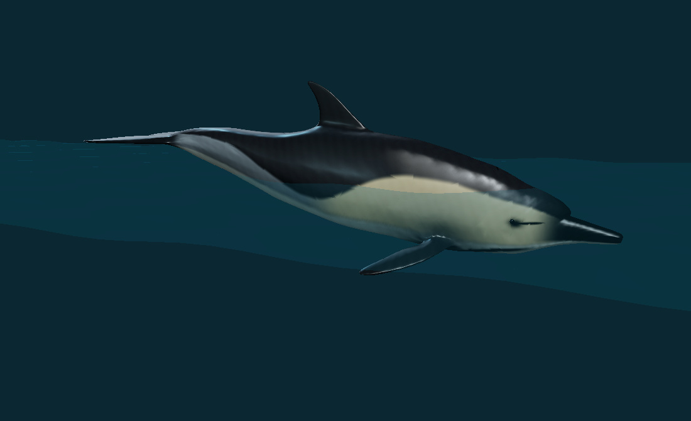

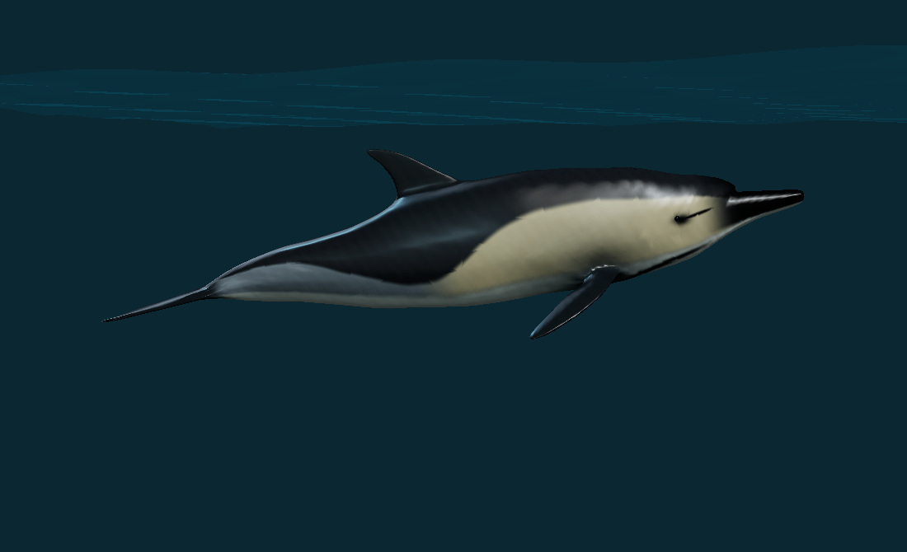

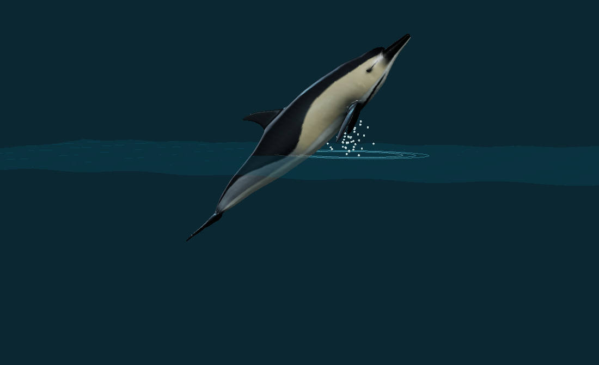

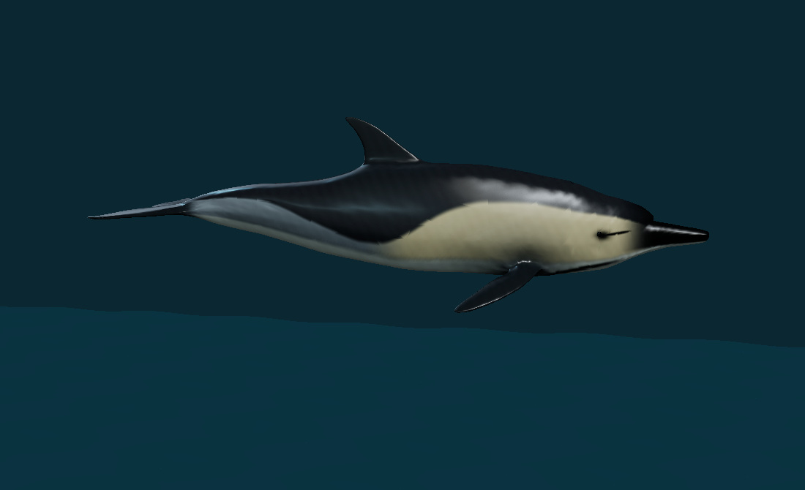

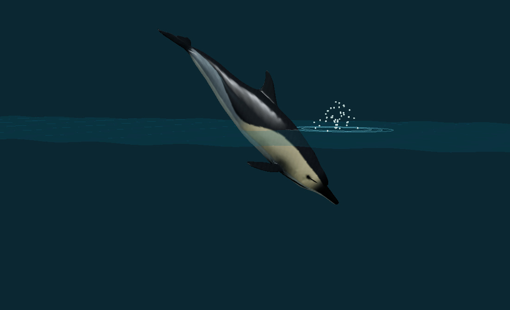

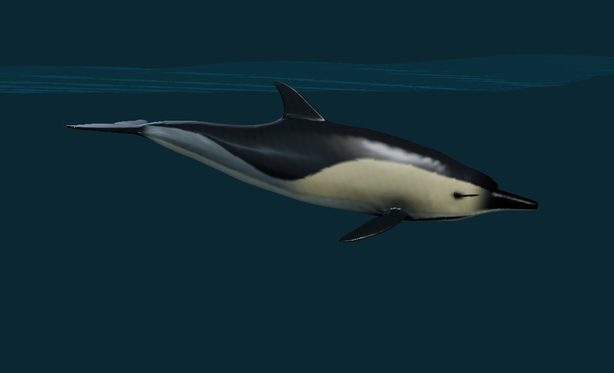
Checks and remaining limits
The focused model checks cover source/record preservation, geometry and UV continuity, eye attachment, finite states, posterior motion, glide/airborne stroke suppression, leap trajectory, complete water clearance, materials and exact static export. Software checks establish implementation behavior; they do not establish biological accuracy or a photorealism percentage.
- Selected proportions, pigment boundaries, optical values and fine skin detail are unmeasured; no scan, expert certification or numerical biological-accuracy claim.
- The jump centre follows an authored parabolic flight interval. Display timing, pitch, stroke amplitude, water ripples and spray are illustrative; no fluid, thrust, contact, respiration or tissue solver.
- Broad SMM species concept retained. Private photos are qualitative references, not calibrated individual reconstructions or subspecies determinations.
- The mouth remains the supplied closed exterior. Prey capture, jaw intake, echolocation, lung ventilation and internal physiology are not animated.
Validation record
{
"version": "0.6.62",
"initialFullAudit": {
"tests": 431,
"passed": 427,
"failed": 4,
"durationMs": 1055394.1446
},
"resolvedAuditFindings": [
"Updated the old three-landmark dolphin expectation to four.",
"The archive display audit now loads the actual supplied dolphin route and current narwhal route.",
"Historical v651 feeding assertions reverse later record changes before checking their original scope.",
"The new behavior inventory is generated before release checks."
],
"affectedRerun": {
"tests": 80,
"passed": 80,
"failed": 0,
"durationMs": 384440.8274
},
"newDolphinChecks": 10,
"retainedNarwhalChecks": 8,
"modelViewsReviewed": 17,
"productionBuild": {
"passed": true,
"mainScript": "./assets/index-U9mxovt6.js",
"mainScriptSha256": "9a3675165c47d02a06ad65e202308d638ea2309c019f5478dee1a14b32715e7e",
"under1GB": true
},
"publicationWorkflow": "Full suite and production build run again on main before deployment.",
"softwareChecksAreBiologicalValidation": false,
"freeOnly": true,
"paidCreditsSpent": 0,
"finalPhaseLabelRerun": {
"tests": 10,
"passed": 10,
"failed": 0,
"reason": "Browser review: re-entry/surface recovery/endpoint labels now follow actual posed body bounds against the reference water surface."
},
"compiledBrowser": {
"passed": true,
"backend": "software",
"viewport": [
1280,
720
],
"previewStudies": 6,
"archiveStudies": 6,
"cameraViews": 7,
"leapTimes": [
0,
3.2,
5,
6.8,
8,
10,
12
],
"airborneAtFive": true,
"reentryBeforeFullSubmersion": true,
"endpointHold": true,
"playTime": 0.37499999995232797,
"pausedTime": 1.0249999999523278,
"staticModelDownloadByteExact": true,
"actualPoseExport": {
"bytes": 5877512,
"sha256": "20eec11a1b11e387b360e03252a0d2b37032f3387a67bd150b63ccf446853d63",
"meshes": 2,
"triangles": 68544,
"animations": 0,
"skins": 0,
"waterContextExcluded": true,
"pose": "jump",
"poseTime": 5,
"version": "0.6.62"
},
"recordDescribesActualAsset": true,
"reportBeforeAfterInspected": true,
"horizontalOverflow": false,
"webglReviewed": false
}
}Source, rights and delivered files
The supplied common-dolphin.zip contains a rigged GLB and two textures. Its GLB has 9,622 vertices and 18,576 triangles. The one artist animation is not used as biological evidence. The supplied archive has no author or licence text; no CC0 or new blanket source licence is asserted. This derivative is published at the user’s explicit request. Original grants remain applicable.
The finished static GLB contains the actual revised body and eyes with embedded PBR maps. It excludes the water reference and contains no skeleton or animation clips. Browser playback uses the separate finite study module. New code and original authored material work follow the project’s MIT terms, subject to the supplied source’s retained rights.
All 336 other species records, all 337 identity/taxonomy/photo/occurrence fields and all 37 previously registered artist assets are preserved. The original common-dolphin admission history is retained, with a strictly reversible revision ledger. Private photographs and research PDFs are not redistributed.
| Map | Size | Bytes | SHA-256 |
|---|---|---|---|
| dolphin-albedo-v0662.jpg | 2048 × 2048 | 206591 bytes | 7fd348e913b907cb4231c79817be8a5271e60213bee8f05993d6e197614b6ab6 |
| dolphin-normal-v0662.png | 2048 × 2048 | 1153004 bytes | 943373ae686e4bddbd0be5b7ab1d6cd9e5c7f5cbd0a362eee9b952757770e12f |
| dolphin-roughness-v0662.png | 2048 × 2048 | 326402 bytes | 3ebc58ce7575a511d8abc283804061fb61056d103350c3aa1422c6cb9814c337 |


Original texture prompt and generation mode
Built-in image generation, new neutral material tile. It supplies subtle microtexture only; anatomical pigment placement and UV baking are numerical. No paid service credits were spent. Final project assets are the three maps linked above.
Use case: scientific-educational Asset type: seamless neutral microtexture tile for physically based common-dolphin skin, to be numerically projected onto an existing 3D animal mesh. Primary request: a square, edge-to-edge macro photograph of smooth living cetacean epidermis, evenly pale neutral grey. Very fine irregular satin skin grain, sparse almost invisible hairline healed superficial scuffs, subtle organic tonal variation only. This is smooth rubbery dolphin skin, very little relief. Uniform diffuse cross-polarized lighting, no baked shadows, no specular hotspots, no gradients, no vignette. Photographic realism at close range. Composition: flat orthographic material swatch, texture fills entire frame, seamless on all edges, consistent scale, no animal silhouette, no features. Constraints: monochrome neutral grey only, no hourglass or other pigment pattern, no eyes, no anatomy, no text, no water droplets, no scales, no leather pores, no pebbled bumps, no creases, no dramatic scratches. Keep texture amplitude extremely delicate. Do not copy any photograph.
Source and preservation audit · Material provenance and exact prompt · Static model audit · Research and view provenance · Record revision · Rights and changes